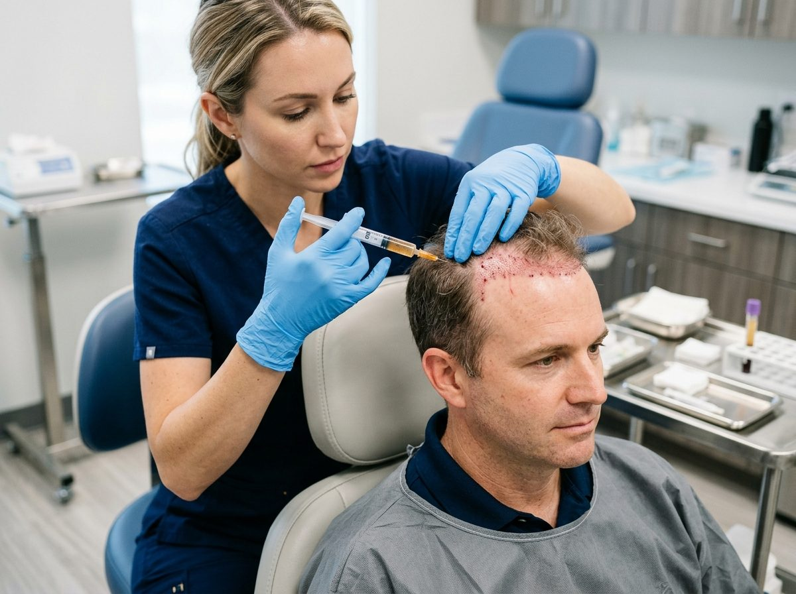
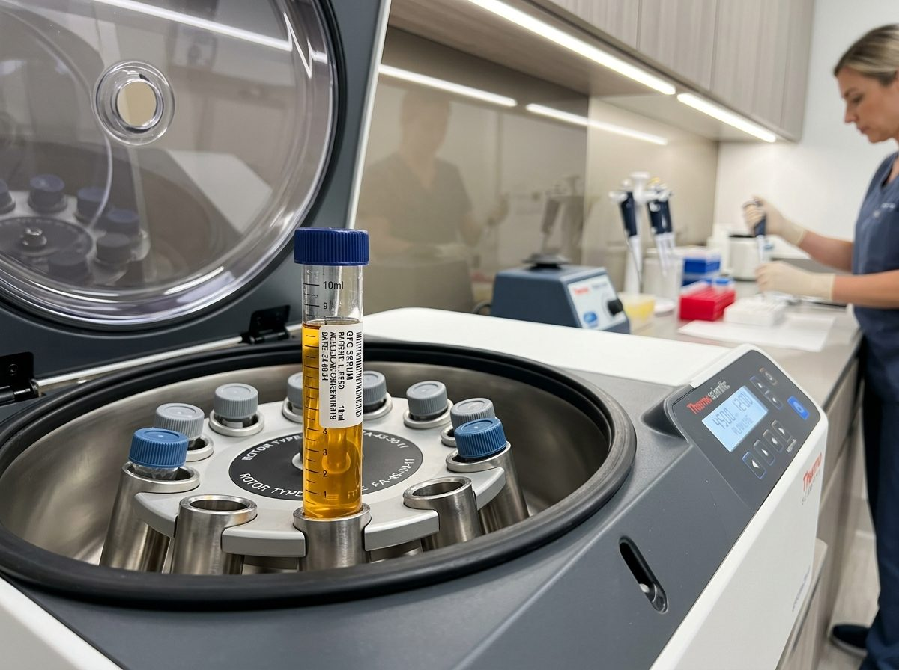

Autologous Platelet-Rich Plasma (PRP) Therapy in Jaipur
Medical-grade autologous PRP therapy protocol that reverses hair thinning, activates dormant follicles, and promotes permanent, natural hair regrowth. Fully customized, pain-managed sessions with concentrated growth factors, performed by senior medical specialists in our sterile surgical suites across Jaipur.

"PRP utilizes your body's own concentrated autologous growth factors to awaken miniaturized hair roots. Our double-spin centrifugation ensures maximum platelet viability and natural density."
Advanced GFC Therapy: Pure Recombinant Growth Factors Without Cellular Debris
GFC (Growth Factor Concentrate) represents the next-generation evolution of hair restoration therapies. Harvested from a proprietary blood processing kit, it extracts pure growth factors without red or white blood cells. This results in zero pain, zero inflammation, zero burning sensations, and exceptionally faster results compared to traditional PRP.

"Our GFC protocol provides maximum concentration of pure autologous growth factors without inflammatory cell debris, delivering significantly faster results with absolute patient comfort."
5-Stage Clinical PRP & GFC Procedure
Every therapy session adheres to stringent clinical guidelines, maintained for optimum patient safety and results.
Follicular Micro-Trichoscopy
Digital scalp scan & magnification assessing hair density, scalp sebum, follicular miniaturization, and active hair units.
Sterile Autologous Blood Draw
Safe extraction of 10-20ml venous blood into sterile vacuum tubes containing specialized clinical anticoagulant.
Double-Spin Centrifugation
Optimal RPM centrifuge separation isolates enriched platelet layer or activates acellular growth factors without damage.
Antiseptic Prep & Scalp Numbing
Application of medical-grade topical anesthetic spray and cooling vibration device for maximum patient comfort.
Targeted Micro-Injections
Super-fine 30G/32G needles gently deliver concentrated growth factors directly to dormant follicular units at the dermal layer.
Follicular Recovery Timeline
Growth factor therapy activates dormant cycles; visible changes unfold across progressive biological phases.
4-Stage PRP Follicular Progression
In-clinic trichoscopy documentation showing progressive hairline revival, follicle sprouting, and shaft caliber growth across consecutive PRP treatments.
Micro-needle delivery of autologous growth factors directly to miniaturized roots. Stimulates micro-capillary vascularity and initiates the awakening of dormant hair follicles.
Before & After Clinical Transformation
Photographic evidence of advanced male crown thinning reversed with autologous PRP therapy, achieving complete follicular canopy coverage.
Temporary weak hair shedding stops. Noticeable reduction in daily hair fall during combing and washing. Scalp micro-circulation and sebum normalization begin.
Miniaturized hair follicles awaken from telogen into anagen phase. Emergence of early soft, vellus hairs with improved root anchoring and capillary blood supply.
Noticeable terminal hair thickening. Decreased scalp visibility across crown and parting lines. Improved hair bounce, volume, and natural tensile strength.
Maximum hair coverage and shaft caliber achieved. Sustained robust hair health supported by scheduled maintenance sessions every 4 to 6 months.
Clinical PRP & GFC FAQs
Answers to common queries about hair and skin growth factor therapy to help you make an informed decision.
No. Prior to micro-injections, we apply a pharmaceutical-grade topical numbing agent combined with a specialized skin cooling vibration device. Most patients describe the sensation as a light tap or mild pressure. GFC therapy is virtually pain-free due to its acellular, cell-debris-free formula that causes zero burning sensation.
For autologous PRP, a standard protocol consists of 4 to 6 sessions spaced 3 to 4 weeks apart. With GFC, because of its higher concentration of pure growth factors, 3 to 4 sessions spaced 4 weeks apart are typically sufficient. Hair shedding stabilizes within month 1, and noticeable density improvement appears around months 3 to 4.
PRP stimulates native hair follicles and reverses miniaturization. However, because genetic hormones (DHT) naturally persist over a lifetime, periodic booster sessions (once every 4 to 6 months) are recommended to sustain peak follicular vitality and density indefinitely.
Yes, absolutely. PRP is considered a gold-standard companion therapy for hair transplants. Administering PRP or GFC during or after transplantation accelerates donor healing, reduces shock loss, and promotes rapid vascularization of newly implanted follicular units.
Costs depend on whether you undergo standard autologous PRP, multi-spin enriched PRP, or advanced Acellular GFC therapy, as well as the number of sessions in your customized package. Kezza Clinic offers transparent pricing and interest-free EMI plans. Contact us for a precise personalized quote after your digital trichoscopy scan.
Because PRP and GFC are 100% autologous (harvested from your own blood), there is zero risk of allergic reaction, foreign body rejection, or systemic toxicity. Mild temporary scalp redness or tenderness settles completely within 12 to 24 hours.
Yes, women are exceptional candidates for PRP and GFC. It is highly effective for female pattern hair thinning (Ludwig scale), diffuse hair loss, widening parting lines, and postpartum telogen effluvium, requiring zero shaving and zero social downtime.
We advise keeping the scalp dry for 24 hours following the procedure to allow full absorption of the growth factors into the dermal papilla. You may wash your hair with lukewarm water and a mild, sulfate-free prescribed shampoo after 24 hours.
Real Patient Comments & Clinical Results
Authentic commentary and clinical outcomes from patients who underwent PRP (Platelet-Rich Plasma) Therapy & GFC treatment for hair density restoration.
“Started seeing excessive crown shedding in my late 20s. After session 3 of PRP, hair fall dropped drastically, and tiny follicular sprouts appeared along my temples. By month 6, the scalp visibility reduced noticeably.”
“Zero downtime and virtually painless with local cooling. The follicular density and strand thickness improved remarkably. Hair pull test went from 8 strands down to 1. Best non-surgical investment I made.”
“Combined PRP with topical minoxidil under clinical supervision. The hair shaft caliber is significantly thicker and my parting line has narrowed. Outstanding medical care.”
“As a practicing physician myself, sterile centrifuge protocols and platelet yield are crucial. Kezza’s clinical methodology is textbook grade. My crown density improved substantially by the 4th cycle.”
“Experienced sudden diffuse hair shedding after stress. GFC gave noticeably faster regrowth than expected. Virtually zero post-session irritation and hair root strength has doubled.”
“Widening hair parting was causing major distress. After four targeted sessions, the visible scalp area along the center partition filled in beautifully. Highly recommend the medical team!”